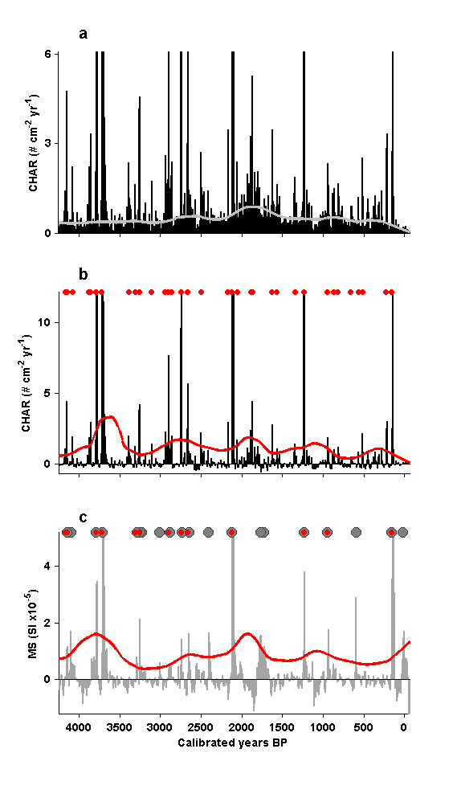

Contents
Fig_3_script.m
Make Figure 3 from: Dunnette P.V., P.E. Higuera, K.K. McLauchlan, K.M. Derr, C.E. Briles, M.H. Keefe. 2014. Biogeochemical impacts of wildfires over four millennia in a Rocky Mountain subalpine watershed. New Phytologist Accepted.
Figure 3. Sediment charcoal and magnetic susceptibility (MS) records. (a) Charcoal accumulation rate (CHAR, black line), interpolated to 10-year intervals, and the 500-year trend (gray line), representing “background” CHAR. (b) Residual CHAR values (black line), the threshold used to identify potential fire events (red line), and CHAR values this threshold and thus identified as local fire events (red dots). (c) Residual MS values (gray line), the threshold used to identify MS peaks (red line), MS values exceeding the threshold and thus identified as MS peaks (grey circles), with coincident CHAR and MS peaks identified as high-severity catchment fires (grey circles with red dots).
FILE REQUIREMENTS: (1) CH10_MS_charResults.csv -- results from CharAnalysis (2) CH10_charResults.csv -- results form CharAnalysis, run with MS data
DEPENDENCIES: NONE
CITATION, FILES, AND SELF-AUTHORED FUNCTIONS AVAILABLE FROM FigShare Higuera, P.E. and P.V. Dunnette. 2014. Data, code, and figures from Dunnette et al. 2014. figshare. http://dx.doi.org/10.6084/m9.figshare.988687
Created by: P.V. Dunnette Created on: December 2012 Updated: 2/2013; 7/2013; 8/2013; 9/2013; 11/2013; 1/2014 by PVD Edited: 4/2014 for publication, by P.E. Higuera.
University of Idaho, PaleoEcology and Fire Ecology Lab http://www.uidaho.edu/cnr/paleoecologylab phiguera@uidaho.edu
clear all
Set working directories: directories where input data are located
%%%% IF ALL FILES ARE LOCATED IN THE SAME DIRECTORY AS THIS SCRIPT, CHANGE %%%% workdingDir to 'pwd' startDir = pwd; % Record starting path workingDir = 'L:\4_archivedData\Dunnette_et_al_2014\CH10_charcoal\'; workingDir2 = 'L:\4_archivedData\Dunnette_et_al_2014\CH10_MS\';
Load data and create variables
cd(workingDir) % Change to working directory charData = csvread('CH10_charResults.csv',1,0); cd(workingDir2) % Change to working directory msData = csvread('CH10_MS_charResults.csv',1,0); cd(startDir) % Change directory back to starting directory.
Define variables from charcoal data
ageTop_i = charData(:,2); % [cal yr BP] Interpolated age (10 yr) C_acc = charData(:,6); % [# cm^-2 yr^-1] CHAR (10 yr int) C_back = charData(:,7); % [# cm^-2 yr^-1] Background charcoal C_peak = charData(:,8); % [# cm^-2 yr^-1] Charcoal peak series charThresh = charData(:,12); % [# cm^-2 yr^-1] Threshold for peak ID char_peaks = charData(:,19); % Index for charcoal peaks
Define variables from MS data
ageTop_i_MS = msData(:,2); % [cal yr BP] Interpolated age (10 yr) MS_peak = msData(:,8); % [SI] MS peak series MSThresh= msData(:,12); % [SI] Threshold for peak ID MS_peaks = msData(:,19); % Index for MS peaks.
Define "high severity catchment fires" (HSCF)
Identify HSCF as any charcoal peak that is proceeded by an MS peak with 10 yr (1 sample) or is followed by a MS peak within 20 yr (2 samples).
HSCF = zeros(size(char_peaks)); % Space for identifying HSCF char_peak_in = find(char_peaks > 0); % Index for charcoal peaks for i = 1:length(char_peak_in) % For each charcoal peak... in = char_peak_in(i); % Find the index for char peak i if sum(MS_peaks(in-2:in+1)) > 0 % If there is a MS peak with in +1 or % -2 samples, then define HSCF as 1. HSCF(in) = 1; end end HSCF_in = find(HSCF > 0); % Index for HSCF
Create Figure
figure(3); clf; set(gcf,'color','w','units','centimeters','position',[5 0 12.35 23.35]); H = 1.05; % Adjust to alter vertical space between subplots. x_lim = [-60 4250]; % x-axis limits for all plots. %%%% Pannel (a) - C_interp and C_back time series subplot(3,1,1) yMin = min(C_acc); yMax = max(C_acc)*0.05; bar(ageTop_i,C_acc,1,'k') hold on plot(ageTop_i,C_back,'color',[0.75 0.75 0.75],'linewidth',2); ylim([yMin yMax]); xlim(x_lim) ylabel('CHAR (# cm^{-2} yr^{-1})','FontSize',9,'FontWeight','b') set(gca,'xtick',[0:500:x_lim(2)],'ytick',[0:3:6],'FontSize',9,... 'FontWeight','b','TickDir','out','Xticklabel',[],'XDir','reverse',... 'box','off'); p = get(gca,'pos'); p(4) = p(4)*H; set(gca,'pos',p); text(4000,yMax*1.1,'a','fontweight','bold','FontSize',12) %%%% Pannel (b) subplot(3,1,2) yMin = min(C_peak)*1.10; yMax = max(C_peak)*0.1; bar(ageTop_i,C_peak,1,'k'); hold on plot(ageTop_i(char_peaks > 0),0.999*yMax,'ro','markersize',4,... 'MarkerFaceColor','r') plot(ageTop_i,charThresh,'color','r','LineWidth',2); ylabel('CHAR (# cm^{-2} yr^{-1})','FontSize',9,'FontWeight','b'); set(gca,'FontSize',9,'FontWeight','b','XDir','reverse','XTicklabel',[],... 'box','off','TickDir','out','ytick',[0:5:10],'xlim',x_lim,'ylim',... [yMin yMax]) p = get(gca,'pos'); p(4) = p(4)*H; set(gca,'pos',p); text(4000,yMax*1.1,'b','fontweight','bold','FontSize',12) %%%% Pannel (c) subplot(3,1,3); yMin = min(MS_peak(5:end-5)*1.10); yMax = max(MS_peak(5:end-5))*0.3; f = bar(ageTop_i_MS,MS_peak,1); set(f,'facecolor',[0.65 0.65 0.65],'edgecolor',[0.65 0.65 0.65]) hold on plot(ageTop_i_MS,MSThresh,'color','r','LineWidth',2) plot(ageTop_i_MS(MS_peaks > 0),yMax,'ok','markersize',8,... 'MarkerFaceColor',[0.5 0.5 0.5],'MarkerEdgeColor',[0.25 0.25 0.25]); plot(ageTop_i(HSCF_in),yMax,'ro','markersize',4,... 'MarkerFaceColor','r'); set(gca,'XDir','reverse','FontSize',9,'FontWeight','b','ylim',... [yMin yMax],'ytick',10^-5.*[0 2 4],'yticklabel',[0 2 4],'TickDir',... 'out','box', 'off','xlim',x_lim); ylabel('MS (SI x10^{-5})','fontsize',9,'fontweight','b'); xlabel('Calibrated years BP','FontSize',9,'FontWeight','b'); p = get(gca,'pos'); p(4) = p(4)*H; set(gca,'pos',p); text(4000,yMax*1.1,'c','fontweight','bold','FontSize',12)